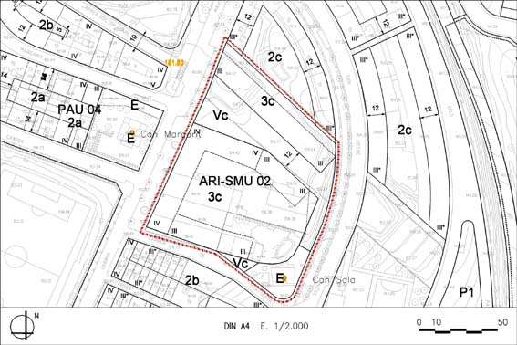

ARI 02 “Bodegues” (Sector de Millota Urbana ARI–SMU 02)

Objectiu: Reforma i transformació d’un espai central del nucli; Trasllat d’una activitat industrial i de la línia d’alta tensió
| Superficie del polígon: Ordenació Sistemes urbanístics de cessió: Viari cívic (Vc) Viari (V) Equipament (E) Zones edificables: (Galibs indicatius) Residencial formant illa.Volumetria específica (clau 3c) |
11.135 m2s 2.303 m2s 65 m2s 671 m2s 8.096 m2s |
C.E.B.: (St) Sostre total (SH) Sostre per habitatges Nombre màxim d’habitatges: Règim HRL : Règim HPC: (1.350 m²st) Règim HPO : (2.765 m²st) Règim HP lloguer : |
1,38 m2st/m2s 15.366 m2st 13.875 m2st 159hab. 108hab. 15hab. 36hab. 0hab. |